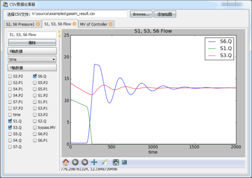
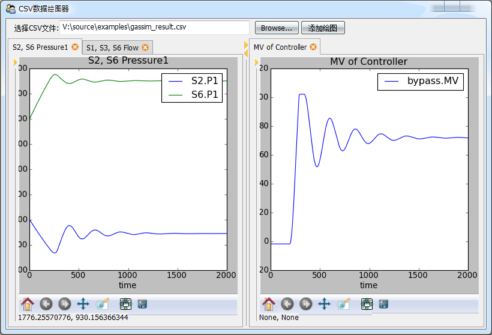

相关文档： 设计自己的Trait编辑器
采用 在traitsUI中使用的matplotlib控件 制作的CSV文件数据绘图工具。
 # -*- coding: utf-8 -*-
from matplotlib.figure import Figure
from mpl_figure_editor import MPLFigureEditor
from enthought.traits.ui.api import *
from enthought.traits.api import *
import csv
class DataSource(HasTraits):
"""
数据源，data是一个字典，将字符串映射到列表
names是data中的所有字符串的列表
"""
data = DictStrAny
names = List(Str)
def load_csv(self, filename):
"""
从CSV文件读入数据，更新data和names属性
"""
f = file(filename)
reader = csv.DictReader(f)
self.names = reader.fieldnames
for field in reader.fieldnames:
self.data[field] = []
for line in reader:
for k, v in line.iteritems():
self.data[k].append(float(v))
f.close()
class Graph(HasTraits):
"""
绘图组件，包括左边的数据选择控件和右边的绘图控件
"""
name = Str # 绘图名，显示在标签页标题和绘图标题中
data_source = Instance(DataSource) # 保存数据的数据源
figure = Instance(Figure) # 控制绘图控件的Figure对象
selected_xaxis = Str # X轴所用的数据名
selected_items = List # Y轴所用的数据列表
clear_button = Button(u"清除") # 快速清除Y轴的所有选择的数据
view = View(
HSplit( # HSplit分为左右两个区域，中间有可调节宽度比例的调节手柄
# 左边为一个组
VGroup(
Item("name"), # 绘图名编辑框
Item("clear_button"), # 清除按钮
Heading(u"X轴数据"), # 静态文本
# X轴选择器，用EnumEditor编辑器，即ComboBox控件，控件中的候选数据从
# data_source的names属性得到
Item("selected_xaxis", editor=
EnumEditor(name="object.data_source.names", format_str=u"%s")),
Heading(u"Y轴数据"), # 静态文本
# Y轴选择器，由于Y轴可以多选，因此用CheckBox列表编辑，按两列显示
Item("selected_items", style="custom",
editor=CheckListEditor(name="object.data_source.names",
cols=2, format_str=u"%s")),
show_border = True, # 显示组的边框
scrollable = True, # 组中的控件过多时，采用滚动条
show_labels = False # 组中的所有控件都不显示标签
),
# 右边绘图控件
Item("figure", editor=MPLFigureEditor(), show_label=False, width=600)
)
)
def _name_changed(self):
"""
当绘图名发生变化时，更新绘图的标题
"""
axe = self.figure.axes[0]
axe.set_title(self.name)
self.figure.canvas.draw()
def _clear_button_fired(self):
"""
清除按钮的事件处理
"""
self.selected_items = []
self.update()
def _figure_default(self):
"""
figure属性的缺省值，直接创建一个Figure对象
"""
figure = Figure()
figure.add_axes([0.05, 0.1, 0.9, 0.85]) #添加绘图区域，四周留有边距
return figure
def _selected_items_changed(self):
"""
Y轴数据选择更新
"""
self.update()
def _selected_xaxis_changed(self):
"""
X轴数据选择更新
"""
self.update()
def update(self):
"""
重新绘制所有的曲线
"""
axe = self.figure.axes[0]
axe.clear()
try:
xdata = self.data_source.data[self.selected_xaxis]
except:
return
for field in self.selected_items:
axe.plot(xdata, self.data_source.data[field], label=field)
axe.set_xlabel(self.selected_xaxis)
axe.set_title(self.name)
axe.legend()
self.figure.canvas.draw()
class CSVGrapher(HasTraits):
"""
主界面包括绘图列表，数据源，文件选择器和添加绘图按钮
"""
graph_list = List(Instance(Graph)) # 绘图列表
data_source = Instance(DataSource) # 数据源
csv_file_name = File(filter=[u"*.csv"]) # 文件选择
add_graph_button = Button(u"添加绘图") # 添加绘图按钮
view = View(
# 整个窗口分为上下两个部分
VGroup(
# 上部分横向放置控件，因此用HGroup
HGroup(
# 文件选择控件
Item("csv_file_name", label=u"选择CSV文件", width=400),
# 添加绘图按钮
Item("add_graph_button", show_label=False)
),
# 下部分是绘图列表，采用ListEditor编辑器显示
Item("graph_list", style="custom", show_label=False,
editor=ListEditor(
use_notebook=True, # 是用多标签页格式显示
deletable=True, # 可以删除标签页
dock_style="tab", # 标签dock样式
page_name=".name") # 标题页的文本使用Graph对象的name属性
)
),
resizable = True,
height = 0.8,
width = 0.8,
title = u"CSV数据绘图器"
)
def _csv_file_name_changed(self):
"""
打开新文件时的处理，根据文件创建一个DataSource
"""
self.data_source = DataSource()
self.data_source.load_csv(self.csv_file_name)
del self.graph_list[:]
def _add_graph_button_changed(self):
"""
添加绘图按钮的事件处理
"""
if self.data_source != None:
self.graph_list.append( Graph(data_source = self.data_source) )
if __name__ == "__main__":
csv_grapher = CSVGrapher()
csv_grapher.configure_traits()